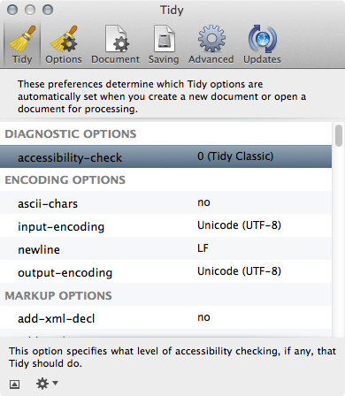

Tidy
The Tidy Preferences panel works as described in How do I work with the Tidy Options Panel?

The Preferences window can be resized when looking at this page, which should provide plenty of space for working with the Tidy options.
The Tidy options set in this pane will be preset whenever you create a new document or open an existing document.